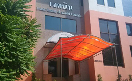
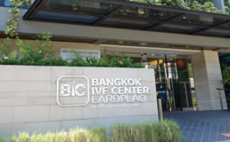
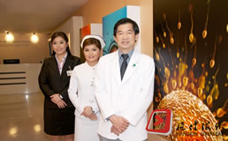

- 泰国做试管婴儿流程，32岁赴泰经历分享
- 泰国做试管婴儿流程，32岁赴泰经历分享
- 泰国做试管婴儿流程，32岁赴泰经历分享
- 泰国做试管婴儿流程，32岁赴泰经历分享
- 泰国做试管婴儿流程，32岁赴泰经历分享
- 泰国做试管婴儿流程，32岁赴泰经历分享
- 泰国做试管婴儿流程，32岁赴泰经历分享
- 泰国做试管婴儿流程，32岁赴泰经历分享
- 泰国做试管婴儿流程，32岁赴泰经历分享
- 泰国做试管婴儿流程，32岁赴泰经历分享
- 泰国做试管婴儿流程，32岁赴泰经历分享
- 泰国做试管婴儿流程，32岁赴泰经历分享
- 泰国做试管婴儿流程，32岁赴泰经历分享
- 泰国做试管婴儿流程，32岁赴泰经历分享
- 泰国做试管婴儿流程，32岁赴泰经历分享
- 泰国做试管婴儿流程，32岁赴泰经历分享
 医疗费用
根据医院选择与用药量的不同而不一样
医疗费用
根据医院选择与用药量的不同而不一样

 生活费用
签证、专车接送、医疗翻译、餐饮膳食等
生活费用
签证、专车接送、医疗翻译、餐饮膳食等
 日常支出
日常零星支出，如外出就餐、打的出行等
日常支出
日常零星支出，如外出就餐、打的出行等
 机票费用
来回程航班费用，国内大机场都有直航航班到曼谷
机票费用
来回程航班费用，国内大机场都有直航航班到曼谷

 总费用
泰国第三代试管婴儿总费用
总费用
泰国第三代试管婴儿总费用
 国内检查
协助客户进行国内体检，并将报告发送至医院进行评估建档
国内检查
协助客户进行国内体检，并将报告发送至医院进行评估建档

 促排准备
每隔3-5天进行激素指标跟踪和检查，检测卵泡生成情况并调整用药
促排准备
每隔3-5天进行激素指标跟踪和检查，检测卵泡生成情况并调整用药
 取精取卵
女性调理身体后，在十几分钟内提取优质卵子，并筛选男性优质精子
取精取卵
女性调理身体后，在十几分钟内提取优质卵子，并筛选男性优质精子
 受精培养
采用优质卵子与精子使用单精子显微注射进行配对，并于体外培育5-6天
受精培养
采用优质卵子与精子使用单精子显微注射进行配对，并于体外培育5-6天
 胚胎检测
根据客户需求，提取胚胎滋养层细胞进行PGD基因诊断或PGS染色体筛查
胚胎检测
根据客户需求，提取胚胎滋养层细胞进行PGD基因诊断或PGS染色体筛查
 移植待产
移植优质胚胎后回国待产，着床9~12天后检测血值验孕，等待宝宝顺利诞生
移植待产
移植优质胚胎后回国待产，着床9~12天后检测血值验孕，等待宝宝顺利诞生
- 泰国试管婴儿医院
- 泰国试管婴儿医生
-

泰国JETANIN医院
泰国杰特宁医院成立于1996年的试管专科医院。泰国第三代试管婴儿成功率75%，国内80%家庭选择去泰国杰特宁医院做试管。..
-
泰国碧雅威医院
泰国碧雅威国际医院成立于1993年的综合性医院，豪华清洁的医疗环境，拥有200张病床，100间诊疗室，是泰国曼谷优秀公共..
-
泰国BNH医院
泰国BNH医院拥有120年历史的贵族医院，现代化医疗仪器，以家庭医生为服务理念，泰国试管婴儿医院成功率75%左右，泰国B..
-
泰国曼谷医院
泰国曼谷医院是泰国最大的提供全面保健的医院之一。曼谷医院成立于1972年，刚成立时只有5位专家医师和30位全职护士。现..
-

泰国曼谷BIC中心
泰国曼谷BIC是泰国曼谷试管婴儿中心，由有着超过10年不孕不育治疗经验的专家组成，采用第三代试管婴儿胚胎移植前基因诊..
-
泰国Superior A.R.T医院
泰国SuperiorA.R.T.由澳大利亚最大的从事试管婴儿治疗组织Genea和泰国治疗不孕不育的专家们合资创立公司。特别是，我们..
-
泰国全球生殖中心
泰国全球生殖中心是一家全方位的不孕不育治疗中心，本中心拥有完整专业的医护人员团队，有病人咨询室、胚胎培养室、精..
-
泰国iBaby医院
泰国爱宝贝生殖基因中心座落于泰国曼谷市最繁华的商业中心，成立2010年4月，Ibaby泰国试管婴儿医院是一家全方位治疗不..
-
泰国康民国际医院
泰国康民国际医院成立于1980年，是国际认可的专科医院。泰国康民国际医院通过泰国第三代试管婴儿技术帮助需要做试管的..
-
泰国帕亚泰医院
泰国帕亚泰国际医院1995年成立的一家私立综合医院，泰国试管婴儿成功率高，交通方便，位于泰国春武里府，临近著名的旅..
-
平勇博士
著名的泰国试管婴儿名医。平勇博士(Dr.PinyoHunsajarupan,M.D.)是泰国生殖内分泌和妇产科专科医师、泰国妇产科学会会员..
-
玛祖博士
玛祖博士(Dr.MatchupornSukprasert,M.D.)是泰国碧雅威(PiyavateInternationalHospital)国际医院试管婴儿中心的资深主治..
-
维瓦医生
维瓦博士(Dr.ViwatChinpilas,M.D.)是著名的泰国BNH医院试管婴儿部门(BangkokInternationalFertilityCentre,BIFC)的主任..
-
琵亚潘医生
琵亚潘医生(Dr.Piyaphanpunyatanssakchai,M.D.)是泰国杰特宁医院(ThailandJetaninHospital)生殖医学专家，是一名出色的..
-
简医生
简医生(Dr.SasawimolPreechapornkul,M.D.)是泰国BNH医院试管婴儿部门(BangkokInternationalFertilityCentre )维瓦医生..
-
查隆宛医生
查隆宛博士(Dr.ChalomkwanPrayoonwech,M.D.)是泰国BNH医院不孕不育专家医生，从事生殖医学及妇产科专业工作十余年，熟..
-
坤蔡医生
坤蔡医生(Dr.KriengchaiSajjachareonpong,M.D.)是泰国杰特宁（JETANIN）医院生殖科的主治医生，也是泰国试管婴儿界里的..
-
优蔻医生
优蔻医生(Dr.YokoTawaratsumida,M.D.)是杰特宁医院最年轻的医学女博士之一，也是最受欢迎的试管婴儿医生之一，生殖医学..
-
炯杰医生
炯杰医生(Dr.JongjateAojanepong,M.D.)是泰国JETANIN试管婴儿医院的院长，炯杰医生在试管婴儿技术方面有着非常大的成就..
-
沙姆杰医生
沙姆杰医生(Dr.SomjateManipalviratn,M.D.)从事辅助生殖技术工作多年，在泰国多家生殖中心工作及进修经历，对临床辅助..
-
提迪贡博士
提迪贡博士(Dr.Thitikornwanichkul,M.D.)是泰国著名的试管婴儿专家，主要从事不孕不育的治疗和子宫内膜异位治疗。有着..
-
披实医生
披实医生(Dr.PisitTantiwattanakul)是一位优秀的临床胚胎工程师。近10年来，披实医生一直致力于研究试管婴儿人工授孕的..
-

查迪医生
查迪医生(Dr.ChartreeSaenghiranwatana,M.D.)是泰国试管婴儿医生中为数不多的可以讲中文的试管婴儿专家医生。泰国玛希..
-
博邦医生
博邦医生(Dr.PokpongPansrikaew,M.D.)在泰国清迈大学医学院取得医学博士学位并完成住院实习；2007年获得妇产科实习证书..
-
丝芮珂医生
丝芮珂医生(Dr.SirisukOuitrakul,M.D.)是泰国杰特宁医院专科医生，主要从事女性辅助生殖。丝芮珂博士擅长宫腔镜手术和..
-
维苏医生
维苏医生(Dr.VisutSuvithayasiri,M.D.)供职于泰国全球生殖中心，是泰国一位有着31年从医经验、非常知名的不孕不育治疗..
-
希芮博士
希芮博士(Dr.SirikarnTongmai,M.D.)是泰国碧雅威国际医院试管婴儿中心的一名主治医生，主要从事妇科生殖内分泌与不孕不..
-
拉切尔博士
拉切尔博士(Dr.RatchadapornRoekyindee,M.D.)是泰国碧雅威国际医院妇产科的一名主治医生，主要从事妇科生殖内分泌与不..
-
潘亚医生
潘亚博士(Dr.PanyaSaksangawong,M.D.)是泰国碧雅威国际医院试管婴儿中心一位非常帅气年轻的医生，他在碧雅威医院主要从..